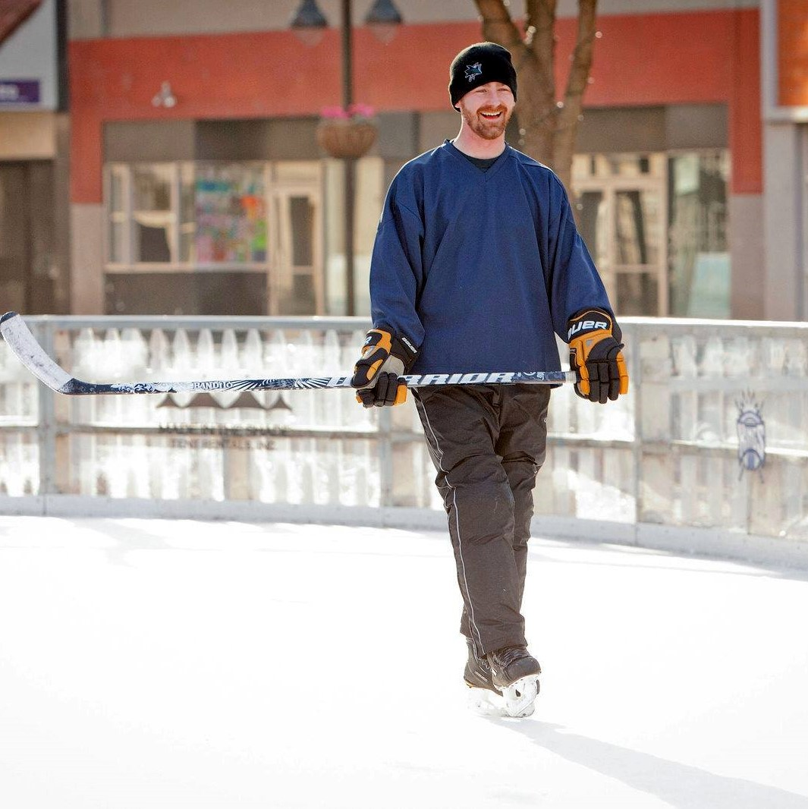

As you can see from the picture to the left, I am a recreational hockey player. I became interested
in ice hockey during the early-1990s for two main reasons, although I never played in any
recreational leagues until I moved to Sacramento. The two reasons I picked up my love for hockey are
the establishment of the San Jose Sharks and the influence of my Big Brother. See, I was raised in
San Jose and the whole city was swept into a frenzy. That was the same time my mom enrolled me in
the Big Brothers Big Sisters program since she was a single parent and thought it would be good for
me to have a male role model. My Big Brother was from upstate New York, was a hockey fan, and grew
up playing hockey on frozen ponds. As a seven-year-old, I could not help to be captivated!!
Fast forward and I now live in Sacramento. After earning my Bachelors in Political Science and
Communication from Fresno State, I jumped into the political campaign world. It was a good fit at
the time because retail politics is what initially drew me to the field in the first place. That,
and during the cusp of the Financial Crisis other options seemed rather limited. The first paid
campaign I worked on was for Barack Obama in Las Vegas. Getting our nation’s first African American
President elected to office is a proud moment in my life. That campaign opened up a series of
campaign management opportunities that led me to Queens, NY, and eventually to the capital of
California, where I transitioned to the chapter of my career with the State Legislature.
I currently work for a Sacramento-based lobbying firm representing an array of clients. However, my
life is not all work and politics. I am a recent MBA graduate from Santa Clara University Leavey
School of Business, and taking a coding boot camp through University of California, Davis. In my
free time, I enjoy getting outdoors to backpack with my dog Vesta, traveling (which during COVID-19
means road trips), reading, and playing ice hockey!
For my professional and educational experience, review my résumé.